A bathroom refresh doesn't need to happen all at once.
It also doesn't need to happen in whatever order Pinterest suggests.
Some of these 20 changes cost an afternoon and almost nothing. Others are worth genuinely saving up for over several months.
Sorting them by what they'll actually cost you, not alphabetically, makes the whole project a lot less overwhelming to start.

The Middle Ground: Bigger Than a Weekend, Smaller Than a Full Renovation
These sit between a weekend project and a full gut renovation. Real improvements that take more planning but don't require tearing the room apart.
1. Hunt Down Vintage Finds
A secondhand mirror, light fixture, or small cabinet brings character a new purchase just can't replicate.
This is often the cheapest way to add a one-of-a-kind piece to the room.
It takes more hunting than a straightforward purchase, but the payoff is a piece nobody else has.
Works well layered in among any of the other, newer changes on this list.
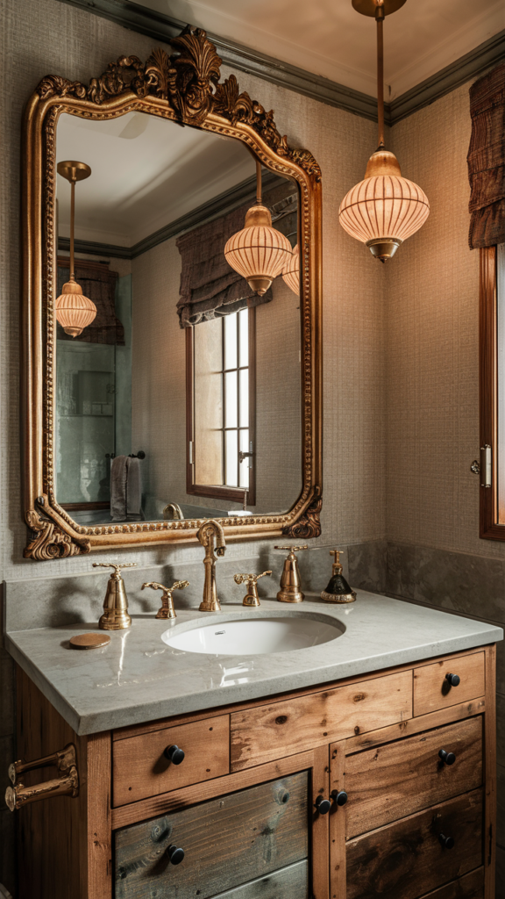
2. Add Open Shelving
Open shelves add storage and a spot to display a few styled objects, without the cost of built-in cabinetry.
This is a relatively quick install for most standard wall types.
Keeping what's displayed intentional matters more here than on a closed shelf, since everything stays visible.
A flexible, mid-cost option between a full vanity overhaul and doing nothing at all.
3. Add Smart Features
A heated towel rack, a smart mirror with built-in lighting, or a smart shower system all add real daily convenience.
These range widely in cost and complexity, so it's worth picking one feature rather than all of them at once.
This suits anyone prioritizing function and daily comfort over pure aesthetics.
Often the best return on investment comes from whichever feature solves an actual daily annoyance you already have.
4. Bring in Black Accents
Matte black fixtures, faucet, hardware, light fixtures, add contrast against lighter walls and tile.
This can be done piece by piece rather than all at once, spreading the cost out over time.
Consistency across fixtures matters more than doing it all in a single weekend.
A flexible mid-range project that works with almost any existing color scheme you've already got.
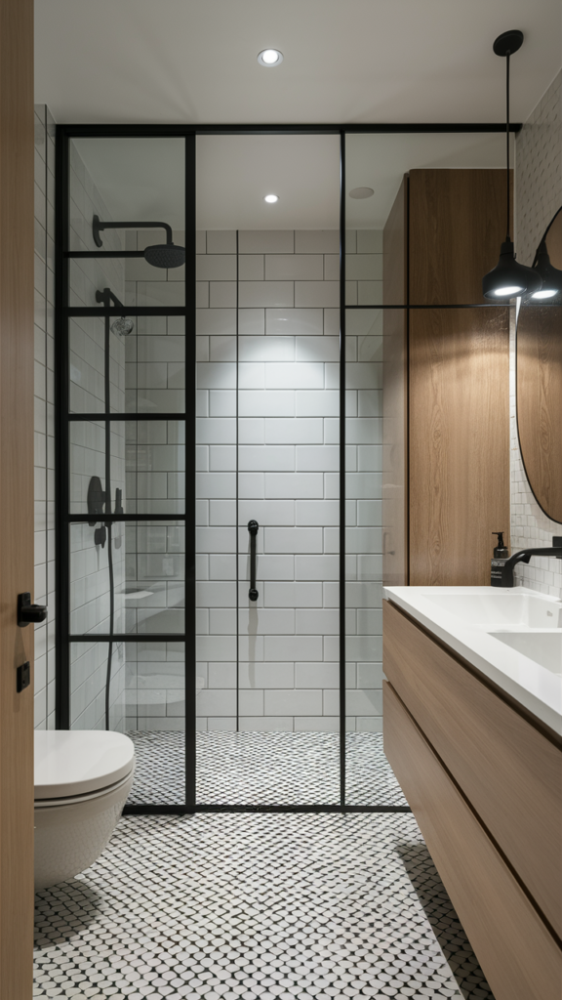
5. Add Built-In Niches
A niche built into the shower wall solves the shampoo-bottle clutter problem permanently.
This requires opening up the wall, so it's best planned alongside a shower renovation rather than as a standalone project.
It's a functional upgrade first, aesthetic second.
Worth prioritizing if you're already planning shower work for other reasons anyway.
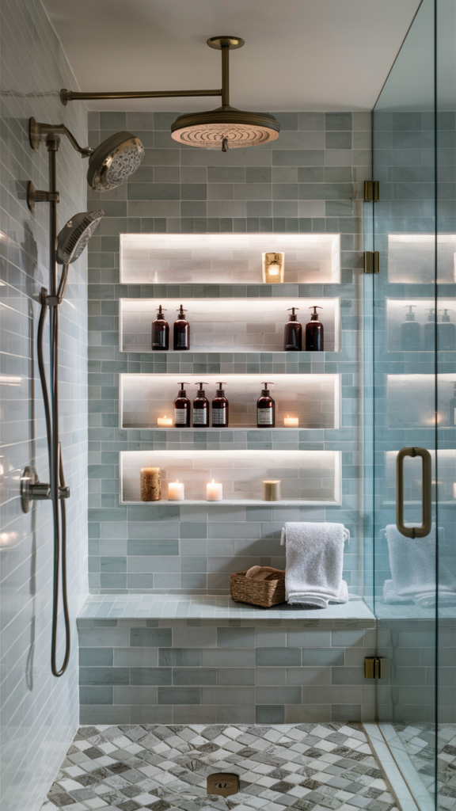
6. Try a Minimalist Reset
Paring back to clean lines and a restrained palette isn't always about buying new things. Sometimes it's about removing what's already there.
This can be the cheapest project on the whole list if it's mostly editing rather than purchasing anything.
It suits anyone who wants the room to feel calm rather than styled.
Pairs well as a baseline before adding any of the splurge items further down this list.
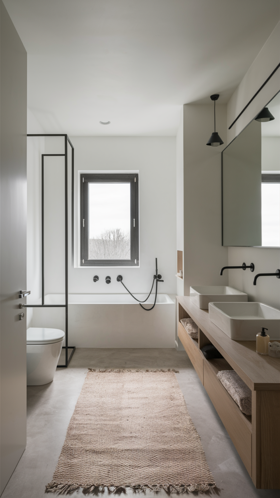
7. Swap in a Frameless Mirror
Swapping a framed mirror for a frameless one gives a bathroom an instantly more modern, streamlined look.
This is a straightforward swap for most standard mirror sizes.
It pairs especially well with a floating vanity, continuing that same clean-line look throughout.
A relatively small cost for a noticeable visual upgrade.
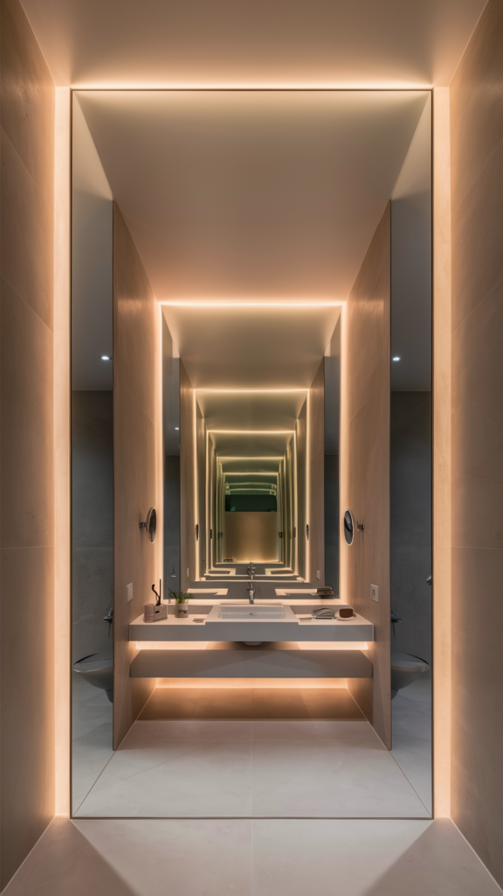
8. Paint an Accent Wall
A bold color or wallpaper on just one wall adds drama without repainting the whole room.
This is a weekend project for paint, or a bit more involved if you're installing wallpaper.
Keeping the other walls neutral lets the accent wall actually read as a statement.
It's one of the better cost-to-impact ratios on this entire list.
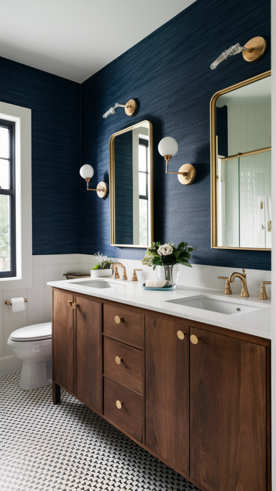
9. Bring the Outdoors In
Natural wood, stone accents, and larger plantings go beyond a quick greenery add. This is a more deliberate material choice throughout the room.
It usually means swapping a vanity material or adding wood shelving, not just one potted plant.
This suits anyone wanting a spa-like feel rather than a purely decorative one.
It's a mid-range project that touches more of the room than a single accent would.
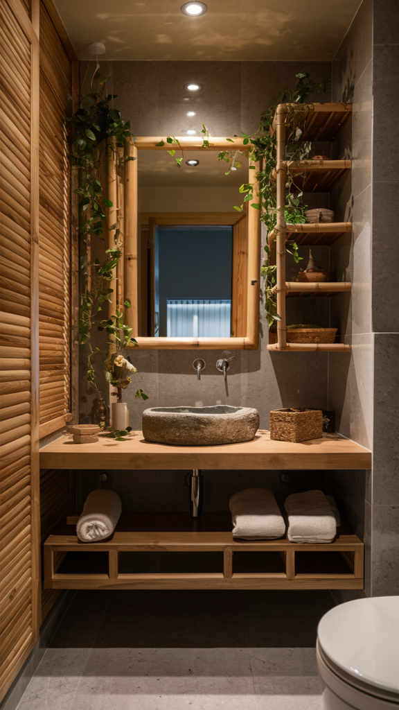
10. Go Floating With Your Vanity
A floating vanity opens up the floor and makes a bathroom feel noticeably larger.
It requires wall-mounted plumbing, which is more involved than a standard vanity swap.
This suits a smaller bathroom especially well, where visual floor space matters more.
It reads as modern without needing anything else in the room to change alongside it.
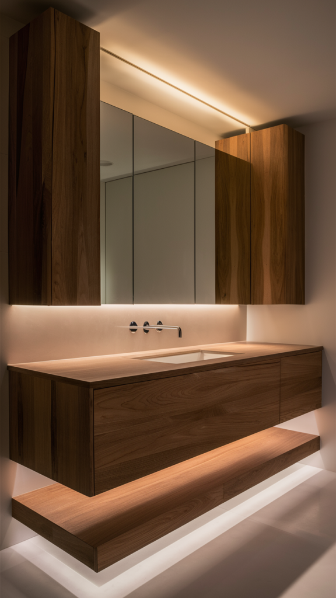
11. Go Bold With Patterned Tile
A Moroccan-style or graphic patterned tile adds personality a plain tile just can't.
This works well as an accent, a shower floor, a backsplash, without needing to cover the whole room.
Keeping the rest of the room simpler lets the pattern actually stand out.
It's a mid-range cost that delivers a genuinely high-impact look.
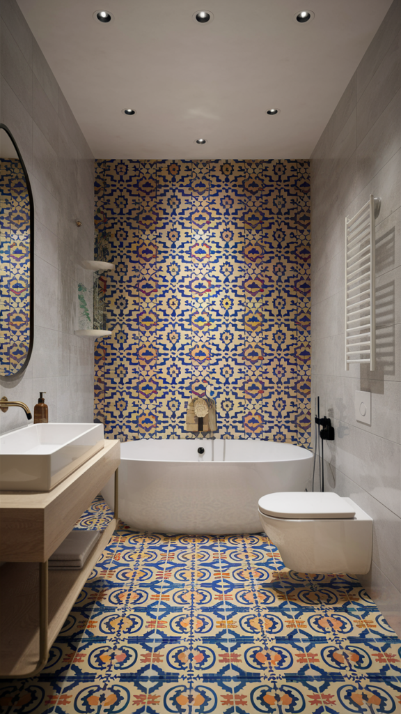
12. Upgrade to Natural Stone Tile
Stone brings texture and a sense of permanence that ceramic tile can't quite match.
It costs more than standard tile and needs periodic sealing to hold up over time.
This suits anyone planning to stay in the home long enough to get the value back.
It pairs especially well with the natural materials idea elsewhere on this list.
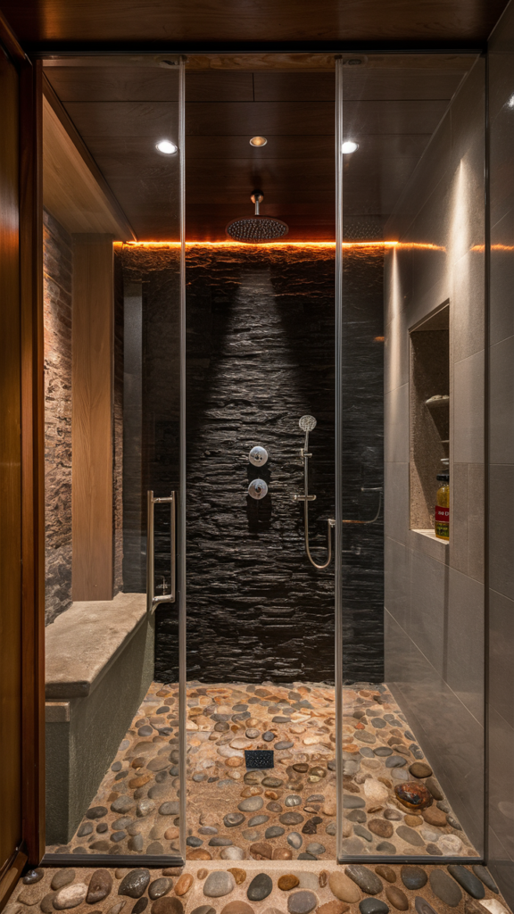
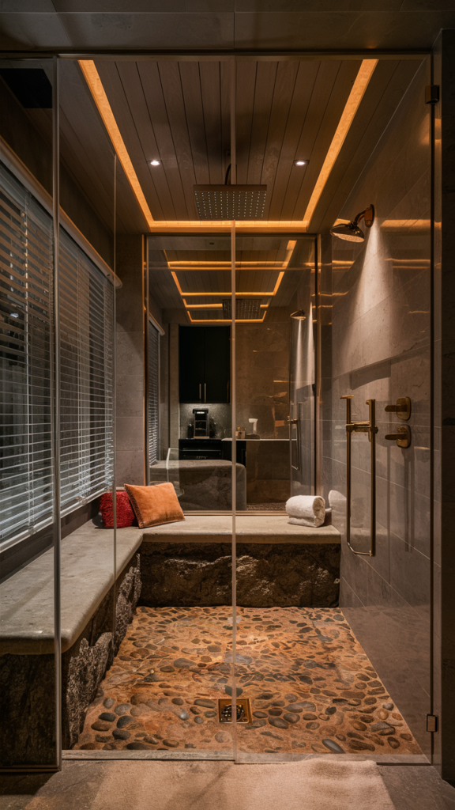
The Splurges Worth Saving For
These cost more and take more planning, but they're the changes that actually transform how the bathroom functions day to day.
13. Go Floor-to-Ceiling With Tile
Running tile the full height of the wall gives a bathroom a genuinely high-end, cohesive look.
This is a bigger material and labor cost than tiling just a shower surround.
It pays off in durability too. Less exposed drywall means less long-term moisture damage down the road.
Best saved for a full renovation rather than a quick refresh.
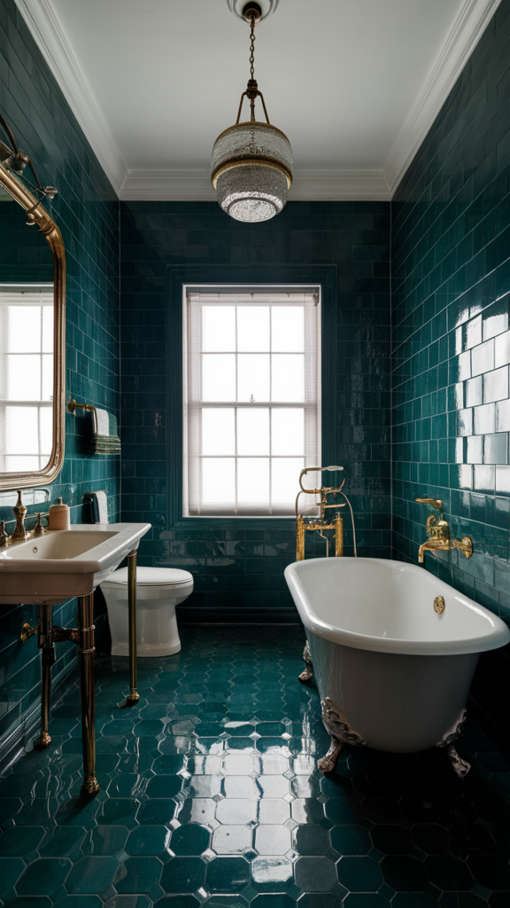
14. Add a Double Vanity
For a shared bathroom, double vanities solve the daily competition for sink space.
This requires real plumbing work and more square footage than a single vanity needs.
It's less about style and more about function. Mornings just run smoother with two sinks instead of one.
Worth prioritizing if you're sharing the bathroom daily with another adult.
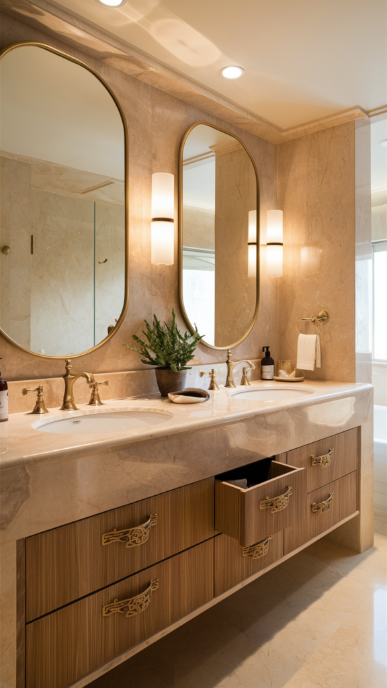
15. Invest in Statement Lighting
A chandelier or sculptural fixture in a bathroom reads as unexpected in the best way.
This needs an electrician for anything beyond a simple swap, which bumps up both cost and timeline.
Paired with a dimmer, it also solves the harsh-overhead-light problem most bathrooms have.
It's a splurge that gets noticed by literally every guest who uses the room.
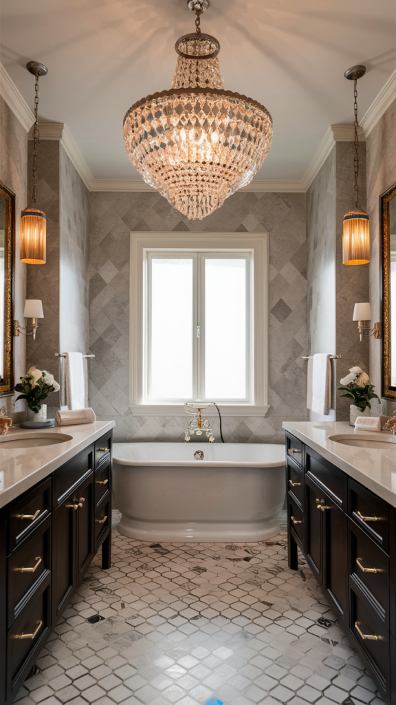
16. Install a Freestanding Tub
A freestanding tub becomes the room's clear visual anchor the moment it's installed.
It requires more plumbing planning than most changes on this list, since placement affects the whole layout.
This is a genuine investment, both in cost and in the renovation itself.
If you actually soak regularly, it's also one of the few purely functional upgrades on this entire list.
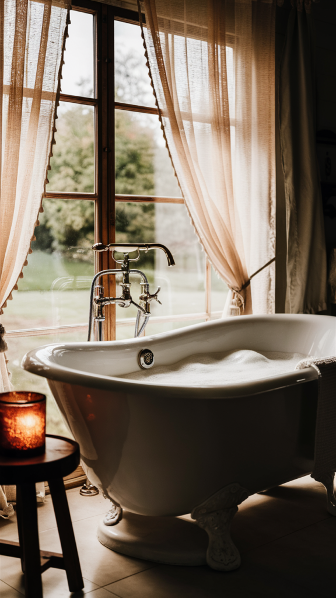
Quick Wins You Can Knock Out This Weekend
These changes take a day or two and cost relatively little, but they shift how the whole room feels almost immediately.
17. Regrout in a Bold Color
Regrouting an existing tile pattern in a bold color turns a plain surface into a deliberate design choice.
This is a weekend DIY project if you're comfortable with basic tile work, or a quick job for a tile pro if you're not.
It's a far smaller investment than replacing the tile itself.
A small detail like this can carry more visual weight than you'd expect.
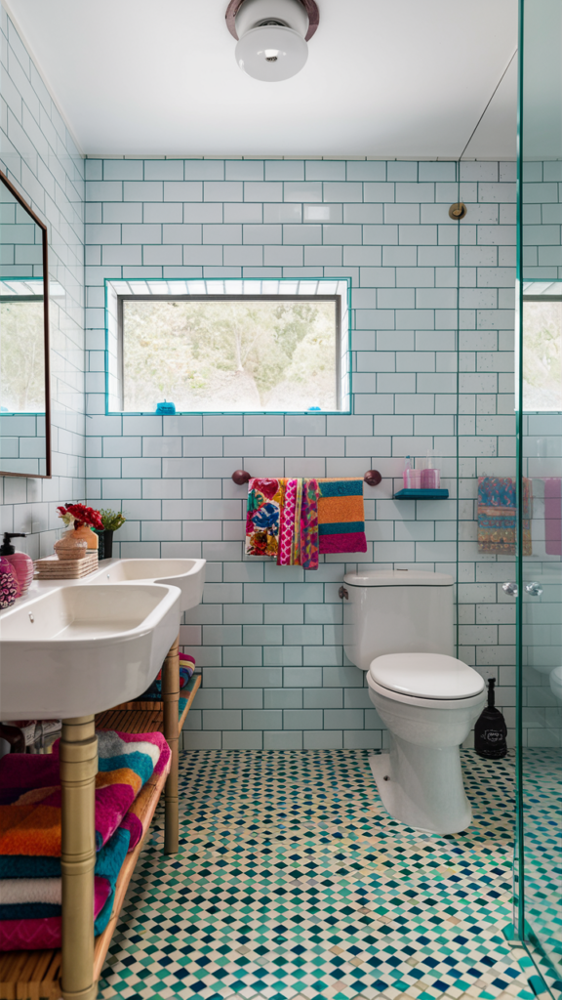
18. Add a Few Personal Touches
A framed print, a scented candle, or one meaningful small object keeps a bathroom from feeling like a hotel showroom.
This costs almost nothing and takes minutes to set up.
It's the detail that makes the other, bigger changes on this list actually feel finished.
Keep it to one or two items. More starts competing with the room's other surfaces.
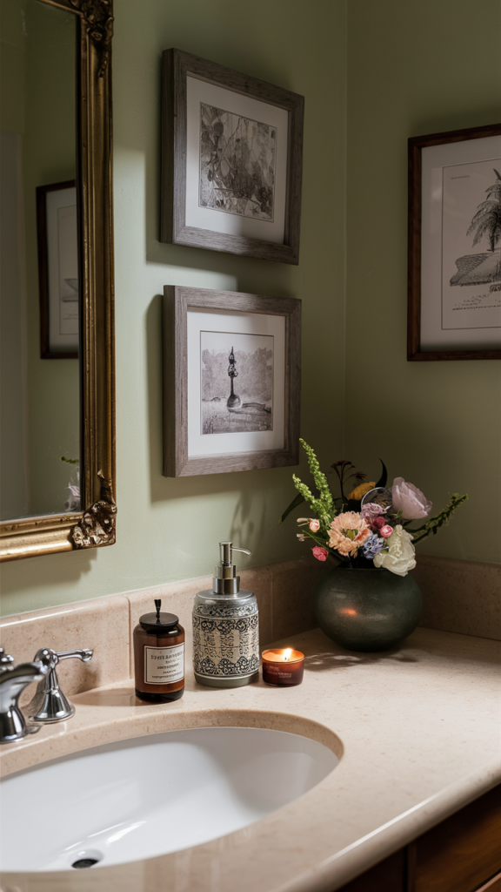
19. Upgrade Your Textiles
Swapping thin, mismatched towels for a matching set of plush ones changes how the whole room reads at a glance.
A new bath mat and a few folded hand towels round out the upgrade for very little cost.
This is the single fastest way to make a bathroom photograph like a hotel.
It requires zero installation and can be done in the time it takes to order online.
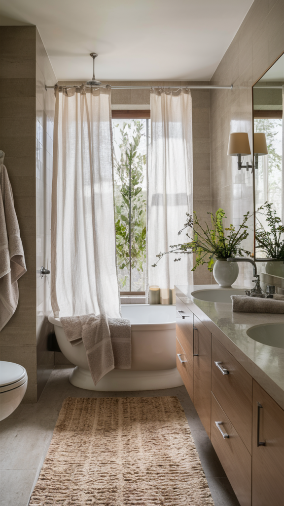
20. Bring In Real Greenery
A plant or two does more for a bathroom's atmosphere than almost any other single addition this cheap.
Humidity-tolerant varieties handle a bathroom's conditions without constant fuss.
This is one of the fastest ways to make a space feel more alive without touching a single fixture.
It's also one of the few changes on this list that costs under twenty dollars.
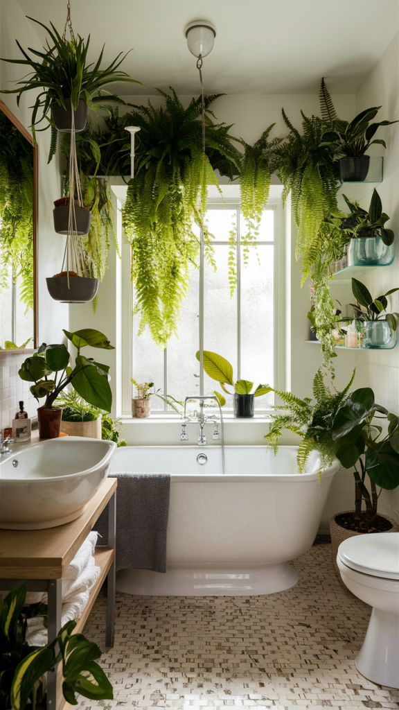
Pick One From Each Tier
None of these 20 changes need to happen in the same month, let alone the same weekend.
Start with the quick wins, save toward the splurges, and let the mid-range projects fill in as time and budget allow.
A bathroom built up this way over several months usually ends up more cohesive than one rushed all at once.
Pick one from each tier, and start there.